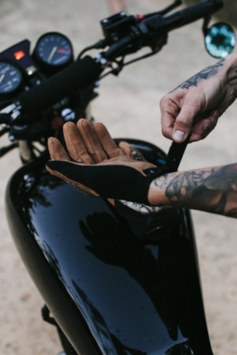
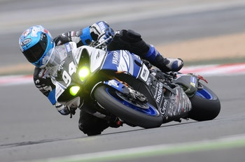
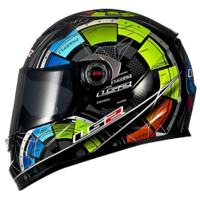
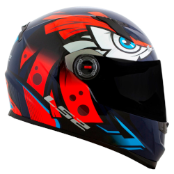
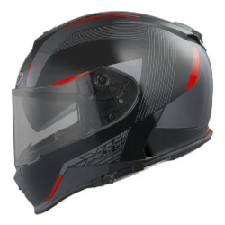

LUVA
Para muitos motociclistas, pilotar é uma questão de sensações e sentimentos. Desta forma, como nas motos tudo começa com o tato das mãos, contar com uma luva para moto adequada é uma questão fundamental. Além disso, as luvas são essenciais no caso de quedas. E uma importante defesa nos dias mais frios.
Felizmente, no mercado existem muitas opções para escolher. Algumas são mais focadas para uso dentro da cidade, outras para quem anda em rodovias e também para estradas de terra. Também existem modelos para inverno e verão. E claro, elas podem ser elaboradas com diferentes tipos de materiais.
Macacão / Jaqueta
A jaqueta ou macacão é um dos itens de segurança mais importantes para o motociclista. Sua principal função é proteger o tronco e braços do impacto e da abrasão do piso em caso de queda, evitando que a pele seja esfolada pelo asfalto.
Existem no mercado vários tipos de jaquetas especiais para motociclistas. As mais utilizadas são as de couro, que protegem bem do frio, vento e abrasão do asfalto, têm longa vida útil e preço razoável. São maleáveis, mas não impermeáveis, e esquentam bastante. Porém, as mais sofisticadas e caras são as italianas, feitas em cordura (material bastante resistente) e dotadas de membrana impermeável e proteções, além de permitirem a transpiração (ao contrário de alguns abrigos impermeáveis que deixam o motociclista encharcado de suor). Modelos nacionais de jaquetas começam a surgir gradativamente no mercado.
Uma boa jaqueta, de cordura ou couro, tem de ter uma “armadura” no mínimo nos cotovelos e ombros e idealmente nas costas também.
Normalmente estas peças de “armadura” são colocadas em bolsos internos e fixadas com velcro para que possam ser retiradas para limpeza da jaqueta. Estas peças, principalmente as que recebem o selo de aprovação CE da União Européia, são bastante eficientes na absorção de impactos. Se o motociclista cair, é muito provável que baterá os cotovelos no chão. Se ainda rolar, irá bater bem mais partes do corpo. Daí a importância dessas proteções.
CAPACETES
O capacete é um ítem fundamental para a segurança do motociclista. Cada capacete possui um nível de proteção e conforto. Um capacete tem o objetivo de reduzir o risco de lesões graves na cabeça e no cérebro, diminuindo o impacto de uma força de colisão na cabeça.
- 
- 
- 
O casco
Trata-se da camada exterior forte do capacete, que distribui o impacto por uma superfície ampla, diminuindo, portanto, a força antes de chegar à cabeça. Embora a casca seja resistente, é projetada para comprimir quando atinge algo rígido. Oferece proteção contra a penetração por objetos pequenos, pontiagudos, em alta velocidade, e também protege o acolchoamento dentro do capacete de efeitos abrasivos e pancadas no uso diário. Esses requisitos significam que a casca precisa ser dura, geralmente com um acabamento exterior suave.
O forro que absorve impacto
É feito de material macio, acolchoado e que pode ser esmigalhado – geralmente poliestireno expandido, comumente chamado de “espuma de borracha”. Essa camada densa funciona como uma almofada e absorve o choque quando o capacete pára e a cabeça tenta continuar se movendo.
O acolchoamento de conforto
Esta camada macia é feita de espuma e pano e fica próxima da cabeça. Ajuda a manter a cabeça confortável e o capacete bem ajustado.
O sistema de retenção ou tira de ajuste no pescoço
Este é o mecanismo que mantém o capacete na cabeça numa colisão. Uma tira é conectada a cada lado do casco. Tiras para o queixo e pescoço, especificamente desenhadas para manter o capacete no lugar durante o impacto, precisam ser usadas corretamente para que o capacete funcione conforme foi projetado